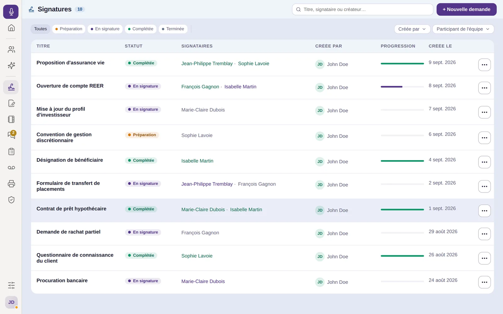
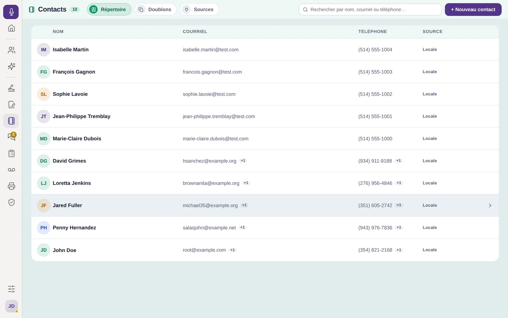

Vos signatures, contacts, appels et télécopies sur le bureau. Téléchargez, installez, connectez-vous — l’application se met à jour d’elle-même.Your signatures, contacts, calls and faxes on your desktop. Download, install, sign in: the app updates itself.
Version 0.6.1
Puce Apple (M1 et plus récent)Apple chip (M1 and newer)
64 bits64-bit
Signatures, contacts et conversations, dans une seule fenêtre.Signatures, contacts and conversations, in a single window.

